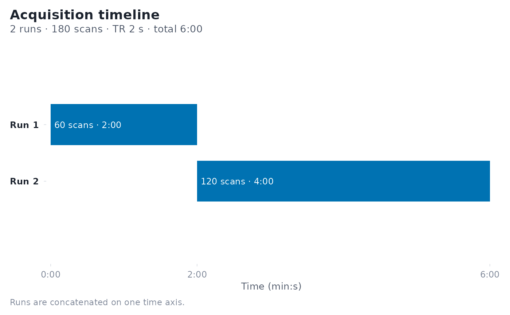

Visualizes the runs of a sampling_frame (from fmrihrf) over time.
Printing a sampling_frame is handled by fmrihrf's own print() method.
Arguments
- x
A
sampling_frameobject created byfmrihrf::sampling_frame().- style
Plot style. One of
"timeline"(default),"grid"or"lane"."timeline"draws one bar per run on a shared time axis;"grid"shows the scans of each run as cells on a within-run scan axis;"lane"is a compact single row of adjacent run segments, annotated above each segment.- show_ticks
Logical; whether to show per-TR tick marks along each run (timeline style only). Default
FALSE.- tick_every
Integer; draw a tick every
tick_everyTRs whenshow_ticks = TRUE(timeline), or alternate cell shading everytick_everyscans (grid; defaults to 10 for runs over 100 scans). Default5.- events
Optional events to overlay as a coverage check: an
event_model, or a data frame with anonsetcolumn (seconds, relative to the start of each run) and arun(orblock) column. Each onset is drawn as a small tick under its run, so runs without events or with an empty tail stand out; onsets that fall outside their run are counted in the caption.- title, subtitle
Optional title and subtitle; the defaults describe the acquisition (runs, scans, TR, total duration).
- ...
Unused.
Examples
sf <- fmrihrf::sampling_frame(blocklens = c(60, 120), TR = 2)
plot(sf)
